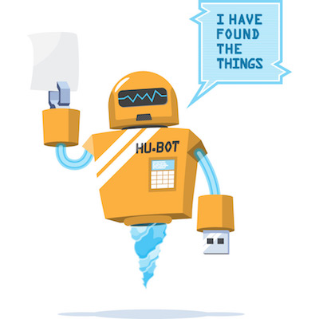

## Installere Hubot
```sh
// install the yo hubot generator
$ npm install -g yo generator-hubot
// genereate hubot
$ yo hubot
// run hubot with
$ bin/hubot
```
Lage et script
Leve i hubots script load path
Være en .js eller .coffee fil
Eksportere en funksjon
```js
module.exports = function (robot) {
// your code here
}
```
```js
// Description:
// Beskrivelse av scriptet ditt som vises i help
//
// Commands:
// hubot cmd - hvilken cmd dette scriptet legger til
module.exports = function (robot) {
robot.respond(regex , function(res){
// Do something with res (Response object)
})
}
```
```js
// Description:
// Et enkelt testscript for enkel respond-funksjonalitet
//
// Commands:
// hubot hello - boten hilser tilbake
module.exports = function (robot) {
robot.respond(/hello/ ,function(res){
var welcomes = ["Hola!", "Hei!"]
res.reply(res.random(welcomes));
})
}
```
Spørsmål?
https://github.com/bekk/chatops-workshop